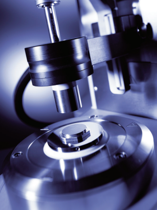

01
DSR
Dynamic Shear Rheometer
DSR testing measures rheological behavior at high and intermediate service temperatures.
It is used to check original binder, RTFO-aged binder, and PAV-aged residue, including G*/sin delta and G*.sin delta results.
